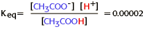

Energy, Enzymes, and Catalysis Problem Set
Problem 6 Tutorial: Equilibrium constant for ionization of acetic acid
The equilibrium constant for the ionization of acetic acid,
,is 0.00002. What can you conclude about this reaction? |
Chemical equilibrium
The equation for the chemical reaction in this problem describes the ionization of acetic acid. Acetic acid (CH3COOH) can ionize to the acetate (CH3COO-) and hydrogen (H+) ions.The balance between the forward and reverse reactions is known as the chemical equilibrium, which is defined as the ratio of the concentration of products and reactants at equilibrium when there is no further change in concentrations.
For this reaction,

Because the equilibrium constant is very, very small we can conclude that almost all of the acetic acid remains unionized, and that ionization of acetic acid is nonspontaneous.Below is a summary of the important relationships between free energy, spontaneous vs nonspontaneous reactions, and chemical equilibria:
Spontaneous Reaction Nonspontaneous Reaction Keq > 1 Keq< 1 G < 0 G > 0 Exergonic Endergonic Forward reaction favored Reverse reaction favored
The ionization of acetic acid
This is a non-spontaneous reaction beginning with acetic acid.


Department of Biochemistry and Molecular Biophysics
University of Arizona
Revised: October 2004
Contact the Development Team
http://biology.arizona.edu
All contents copyright © 1996. All rights reserved.